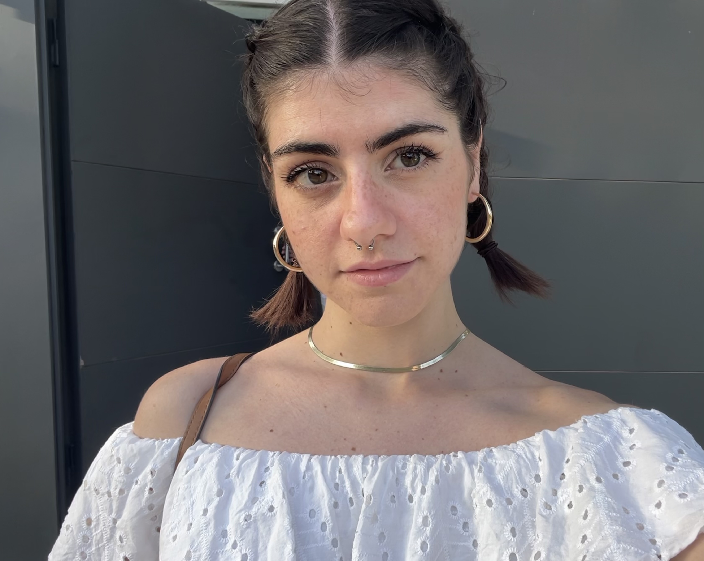

Chiara Ausiello
Curriculum Vitae

Hello! I am Chiara and I come from Naples, Italy.
Literature has always been my greatest passion, therefore I have decided to specialise in literary investigation since I was in high school.
I have studies foreign languages, linguistics and literatures in high school and during my bachelor, studying German, Spanish and English, as you can see below.
For my first Master of Arts, I decided to continue my literary theoretical inveatigations, doing a in comparative literature, in Utrecht.
However, since I was very young, my goal is to work as an editor in a publishing house. For this reason, I decided to start this new Master at Leiden University.
I am sure it is going to be amazing!
| Prior Knowledge | As I was in my early teenage years, I had a blog where I approached html for the first time. In the last three years, I have been using LaTex for some of my document Almost ten years later, during my Master, I approached and learnt the basics of Digital Humanities, using programmes for quantitative research on literary texts and Distant Reading such as LIWC and Stylo and learning the basics of Python in order to develop a personal portfolio for a literary research proposal. |
| Expectations | From the DMT course I expect to gain more knowledge and confidence with digital tools and coding languages, in order make use and explore new approaches to literature. |